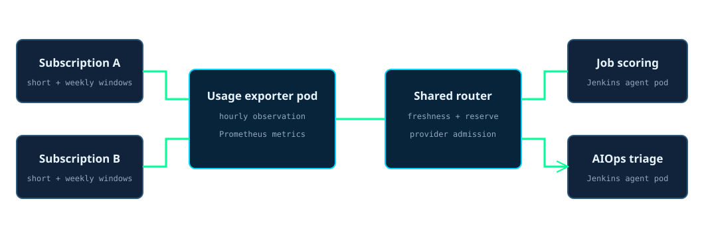
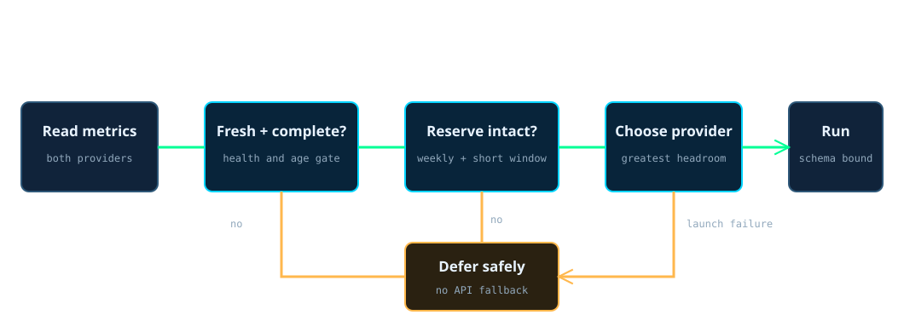

API to usage-based AI pipelines
Scheduled AI work uses subscription capacity only when there is measured room for it. If the measurement is stale or the reserve is reached, the work waits.
A usage exporter runs as a Kubernetes pod in the monitoring namespace and refreshes the remaining short-window and weekly allowance for two existing subscriptions about once an hour. Prometheus scrapes the cached observation every minute and keeps the history. When a Jenkins job reaches a hard reasoning task, a shared Python router reads that observation, rejects stale or incomplete data, protects a reserve for interactive work, and selects the provider with more weekly headroom. A Vault-backed wrapper exposes subscription OAuth only to the chosen child process. The agent runs without tools, without session persistence, in a read-only sandbox, and must return the requested JSON schema. There is no model API key and no metered fallback.
Measured from the AIOps spend ledger on 2026-08-24: 10 metered calls had cost about $0.11 before the routing boundary changed.
How to read it in thirty seconds
Where the routing system runs
The observer and its Prometheus scrape live in Kubernetes monitoring. The consumers run as short-lived Jenkins agent pods. They share one router module and the same Vault-backed Codex and Claude wrappers, so provider choice and credential handling are not reimplemented by each pipeline.

The seven-step admission path
- The exporter samples both subscriptions.
It records the remaining weekly and short-window allowance, whether the poll succeeded, and when the last successful observation occurred.
- Prometheus keeps the routing evidence.
It scrapes the cached observation every minute. The exporter refreshes the upstream provider data about once an hour, so dashboard history does not increase provider polling.
- A Jenkins workload reaches a hard reasoning task.
Deterministic parsing and local inference run first. The shared router is used only for work that still needs a stronger agent.
- The router validates the observation.
A failed, incomplete, future-dated, or more-than-two-hours-old sample is ineligible. Missing data never becomes permission to spend.
- The router protects interactive capacity.
It holds back each provider's committed weekly reserve and requires more than five percent remaining in the short window.
- The eligible provider with more headroom runs.
Weekly headroom decides first and the short window breaks a tie. The wrapper gives the child process temporary subscription access and nothing resembling a model API key.
- The result must satisfy the caller's schema.
Invalid output is rejected. When no provider is safe, scoring remains queued and AIOps retains its local classification instead of silently buying an API call.
The safe answer can be no
The important behavior is not which provider wins. It is that every route to a remote agent passes the same freshness, reserve, and output checks, and that both callers have an explicit way to defer work.

How it runs now
| When | What runs | What a quiet result means |
|---|---|---|
| Every minute | Prometheus scrapes the exporter's cached observation. The exporter refreshes both provider responses about once an hour. | A failed provider poll retains the last value for visibility, but freshness and success metrics make that provider ineligible. |
| During job enrichment | Deterministic parsing and local extraction run before one bounded scoring batch asks the router for admission. | Deferred scoring remains in PostgreSQL for the next scheduled run. |
| During AIOps triage | Local classification handles the common path. Only hard cases request a headless agent. | An unavailable escalation leaves the local result intact and records the limitation. |
| At provider selection | The router compares safe weekly headroom, then uses the short window as the tie-breaker. | No eligible provider is a normal capacity decision, not a reason to use a metered API. |
| Inside the child process | The selected CLI receives temporary subscription OAuth and a strict output schema. | Credentials disappear with the process, and malformed output changes no pipeline state. |
What the first design got wrong
Scheduled inference was being bought twice
The original pipelines used metered model APIs while paid subscription capacity was already available and expiring. The AIOps ledger made that repeated path visible on 2026-08-24: 10 calls had accumulated about $0.11 in incremental cost.
The replacement
Job scoring moved to the shared usage-aware router on 2026-08-23. AIOps triage followed on 2026-08-24. Both retained their workload-specific fallback behavior while sharing observation, reserve, provider choice, credential scoping, and schema validation.
The prevention built into the route
The consumers no longer receive model API keys. Stale telemetry, exhausted reserves, wrapper failure, and invalid output all fail closed, and there is no code path that converts those failures into a metered call.
What I would do differently
I would build admission control before adding the first unattended model consumer. The hard part was not invoking an agent. It was defining what counts as safe capacity, who owns the reserve, how credentials reach only one process, and what each workload does when the correct answer is not now.